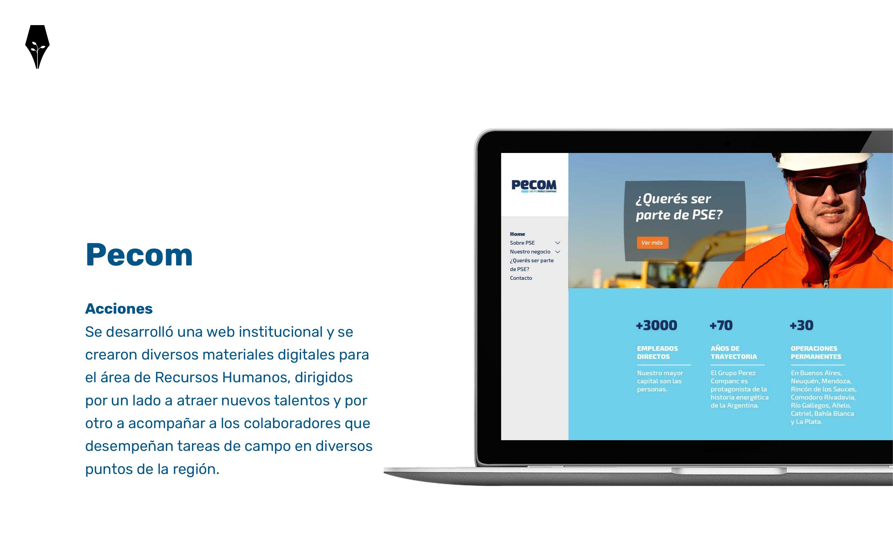
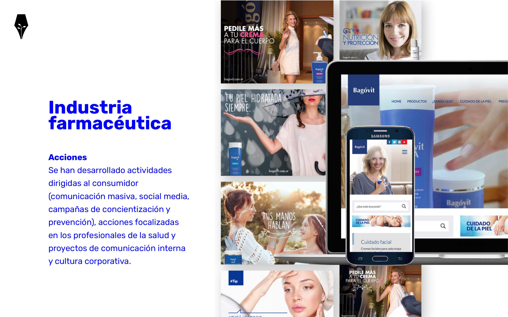
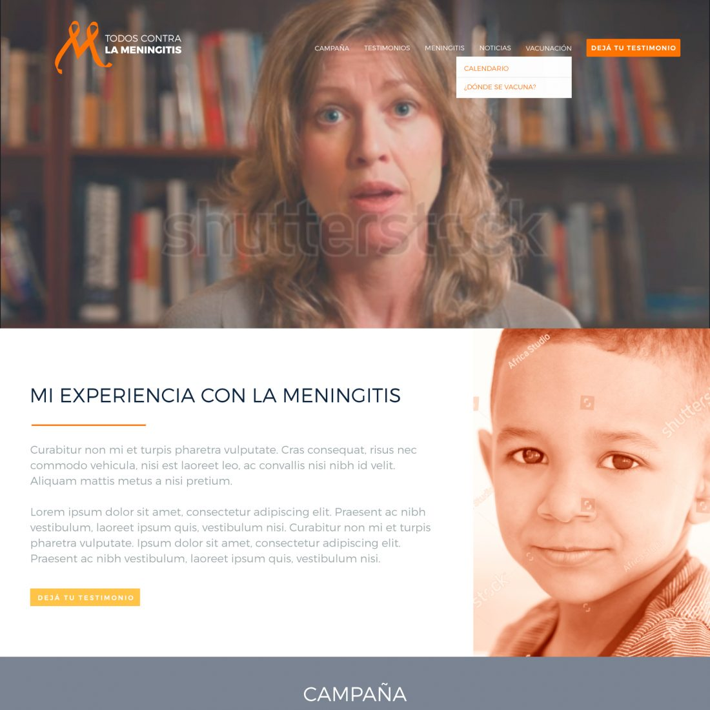
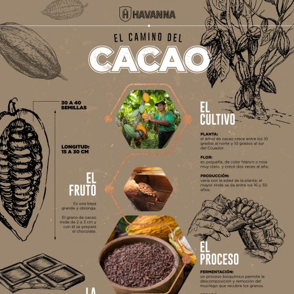

La mejor manera de conocernos es mirar lo que hacemos.
Una selección de nuestro archivo: entretenimiento, comunicación en salud, marcas de consumo y experiencias digitales.
Historias que siguen en digitalSocial media · Contenido regional
Abrir una conversaciónComunicación en salud · Social media
Socio PañaleroPlataforma digital · Relación con el canal
Muchas señales. Una mirada editorial.Social media · Entretenimiento

Conectar una organizaciónComunicación corporativa · Digital

Cuidado que se cuentaDiseño digital · Cuidado personal

Todos contra la meningitisComunicación en salud · Campaña digital
La claridad también genera confianzaComunicación B2B · Experiencia digital

El camino del cacaoContenido editorial · Diseño de información
 ↗
↗